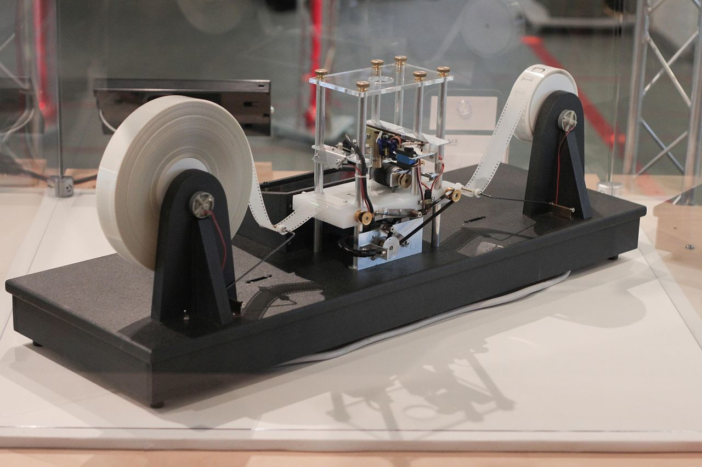

CECYT5
Materia: Computacion basica 2
Decimos que estas máquinas son más potentes que las de estado finito ya que poseen memoria, es por todo esto que las máquinas de Turing son consideradas como modelos de computación más generales ya que pueden realizar cualquier operación que una computadora moderna puede hacer. Tanta es su importancia e impacto en la historia de la informática que estas servirán de inspiración para que el matemático John von Neumann desarrollara un modelo de un computador, la arquitectura de von Neumann.
Kenneth H. Rosen brinda esta definición, más formal y matemática, de una máquina de Turing:
“Una máquina de Turing T=(S, I, f, s0) consiste en un conjunto finito de estados S; un alfabeto de símbolos de entrada I, que contiene el símbolo B del espacio en blanco; una función parcial fde SI en SI{R,L}, y un estado inicial s0”
Para entender el funcionamiento de una máquina de Turing con la definición anterior debemos considerar una unidad de control, también a veces llamado control finito, y una cinta infinita en ambos sentidos que está dividida en celdas. La unidad de control tiene una “cabeza lectora” que es capaz de revisar o posicionarse en una celda a la vez, también se dice que cada celda puede contar con un elemento de un conjunto finito de símbolos que son llamados símbolos de la cinta.
A su vez hay que considerar que en cada momento solo hay un número finito de símbolos distintos de blanco en la cinta.
La acción de la máquina de Turing depende en cada paso del valor que toma la función f en el argumento determinado por el estado y símbolo de la cinta. En cada paso, la unidad de control lee el símbolo de la cinta Sy la función f está definida para el par (s,x) con f(s,x)=(s',x',d) entonces la unidad de control hace lo siguiente:
1.- Cambia de (pasa al) estado a s'
2.- Escribe (imprime) un símbolo x'en la celda actual, es decir la celda que se está revisando, y borra o reemplaza el símbolo x que había en la celda y que fue quien determinó, junto con el estado s, el movimiento de la máquina de Turing
3.-Mueve la cabeza lectora a la celda derecha (d=R) o a la celda izquierda (d=L)
Los pasos anteriores suelen expresarse como tuplas del estilo (s,x,s',x',d). En ocasiones se añade un término diferente a la tupla que indica a la máquina que debe parar, aunque también se puede especificar que la máquina debe parar si la función parcial f no está definida para (s,x).
Algo importante a considerar es que se supone que al momento de empezar a operar, la máquina de Turing ya está en un estado inicial S0 y está situada en un símbolo de la cinta
Hay muchas versiones modificadas de la definición de máquina de Turing. Se pueden hacer cambios a las capacidades de estas máquinas de diferentes formas. Por ejemplo, se puede permitir que en cada paso la máquina se mueva a la derecha, izquierda o que permanezca quieta, que opere en diferentes cintas, que la cinta sea bidimensional, incluso que tenga múltiples cabezas lectoras de diferentes celdas simultáneamente. .
A pesar de todo lo anterior, no importa cual de estos modelos se use o incluso si se combinan porque nunca se aumentará o disminuirá la potencia de cálculo de la máquina. Cualquier variante puede hacer lo mismo que la máquina de Turing original; la razón porque las variantes son útiles es porque permiten diseñar una máquina que haga un trabajo específico de forma más sencilla.
Para comprender mejor el tema, de una manera mas didactica, mostramos el siguiente video, obtenido de youtube
Ginatost. (2018, 9 octubre). ¿Qué es una máquina de Turing? Explicación simple | Gina Tost [Vídeo]. YouTube. https://www.youtube.com/watch?v=Es2NwtUwVc0